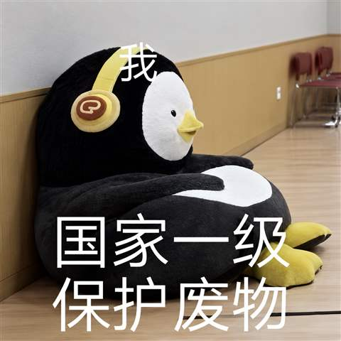
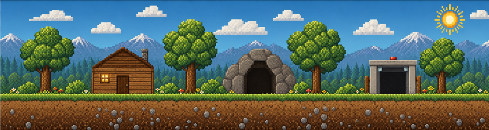
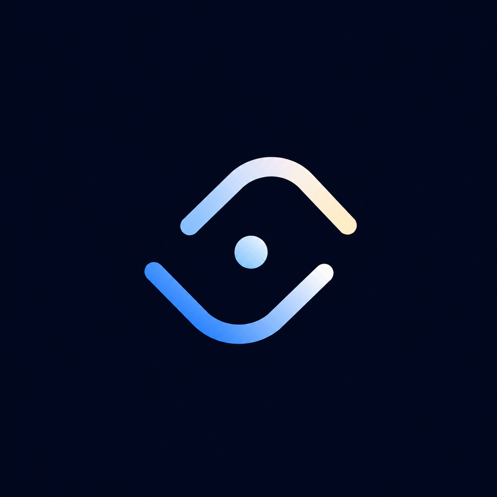

The pages I will introduce about...
MY WORK

A selection of my projects. In my AI-assisted work, I also refine and add details, fix visual bugs, and improve the overall presentation.
Let’s see what I’m done
Want to dig in?
Dietary guidance for people with chronic kidney disease.
01 / FEATURED · WECHAT MINI PROGRAM · SUMMER 2025
Mini Games
Simple AI-made board, card, and airplane games, started in June 2026 to enjoy while waiting for AI tasks.
02 / JUNE 2026 - PRESENT / SIMPLE VERSIONS
IRIS
Eye-based communication for people with late-stage ALS. I designed the software using Codex at EniacXI.
03 / 2025 / ENIACXI HACKATHON